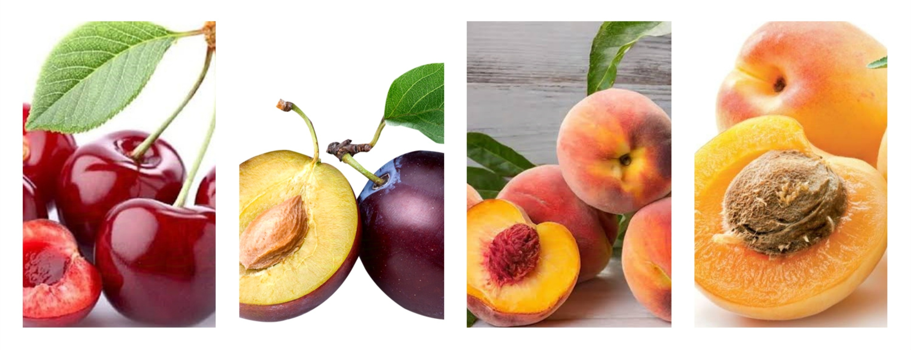
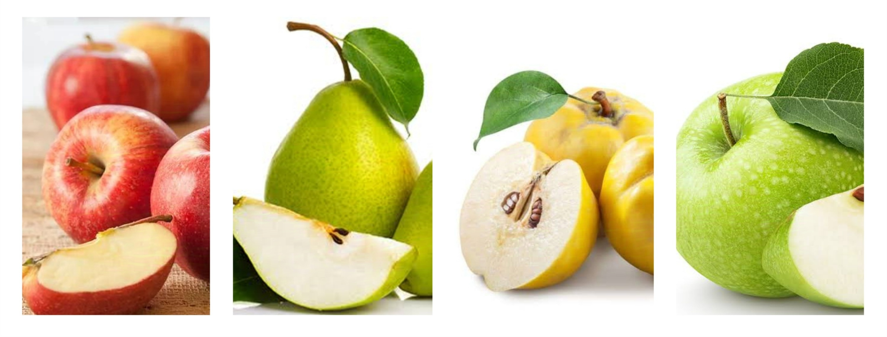
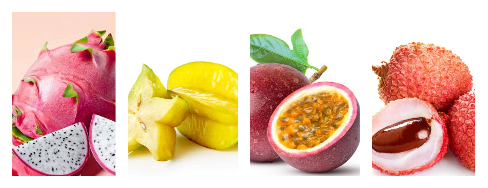

Fruits are naturally sweet or savory foods that come from flowering plants and are often enjoyed for their flavor, nutrition, and versatility. They can be eaten fresh, dried, or used in various dishes, providing essential vitamins, minerals, and fiber. Fruits are a great option for snacking, as they can satisfy cravings and contribute to a healthy diet.
For more info about Natural fruits: Click Here
Citrus fruits are fruits that belong to the Citrus genus, known for their juicy, tangy flavor. Common examples include oranges, lemons, limes, and grapefruits. They are rich in vitamin C, antioxidants, and other essential nutrients, which can help boost the immune system, improve skin health, and promote overall well-being. The benefits of citrus fruits include their ability to enhance digestion, support heart health, and provide hydration. They can also help reduce the risk of chronic diseases due to their high antioxidant content. However, consuming too much citrus can lead to stomach upset or acid reflux in some individuals, as their acidity may irritate the stomach lining. Citrus fruits can be enjoyed at any time of day, whether as a refreshing snack, added to breakfast, or included in alads. It's best to consume them fresh to maximize their nutritional benefits. While they are generally healthy, moderation is key, especially for those sensitive to acidity or those with certain digestive conditions.

Berries are small, juicy fruits that are typically sweet or tart, and they include varieties like strawberries, blueberries, raspberries, and blackberries. These fruits are packed with vitamins, minerals, and antioxidants, making them a popular choice for health-conscious individuals. The benefits of berries include their high antioxidant content, which can help reduce inflammation and lower the risk of chronic diseases, such as heart disease and diabetes. They are also rich in fiber, which aids digestion and promotes a feeling of fullness. However, some berries may carry pesticides, so it's essential to wash them thoroughly or choose organic options when possible. Berries can be enjoyed at any time of day, whether as a snack, added to smoothies, yogurt, or oatmeal, or incorporated into salads and desserts. They are versatile and can easily fit into various meals. While they are generally healthy, moderation is important, as some individuals may experience digestive discomfort from consuming large quantities. Overall, berries are a nutritious and delicious addition to a balanced diet.
Stone fruits are fruits that contain a large, hard pit or "stone" in the center, surrounded by sweet or juicy flesh. Common examples include peaches, plums, cherries, and apricots. These fruits are rich in vitamins A and C, as well as fiber, making them a nutritious snack choice. The benefits of stone fruits include their ability to support digestive health due to their fiber content, as well as their high antioxidant levels, which can help protect against oxidative stress and inflammation. They also provide hydration, as many stone fruits have high water content. However, some people may experience allergic reactions or digestive issues if they consume too many stone fruits, particularly if they have sensitivities. Stone fruits can be enjoyed at any time of day, whether fresh as a snack, added to salads, or used in desserts and smoothies. They are typically in season during the summer months, making them a refreshing choice in warmer weather. While they are generally healthy, it's best to consume them in moderation, especially for those who may have sensitivities to certain fruits. Overall, stone fruits are a delicious and nutritious addition to a balanced diet.

Pome fruits are a type of fruit characterized by a core that contains seeds surrounded by a fleshy, edible layer. Common examples include apples, pears, and quinces. These fruits are rich in dietary fiber, vitamins, and antioxidants, making them a popular choice for healthy snacking. The benefits of pome fruits include their high fiber content, which aids digestion and helps maintain a healthy weight by promoting feelings of fullness. They also contain vitamin C and various antioxidants that can support heart health and reduce the risk of chronic diseases. However, some pome fruits can be high in natural sugars, so moderation is key, especially for individuals monitoring their sugar intake. Pome fruits can be enjoyed at any time, whether fresh as a snack, sliced into salads, or baked in desserts. They are often available year-round, making them a convenient choice for meals and snacks. While they are generally healthy, it's important to wash them thoroughly to remove any pesticide residues and consider organic options when possible. Overall, pome fruits are a nutritious and versatile addition to a balanced diet.

Melons are large, juicy fruits with a high water content, making them refreshing and hydrating. Common varieties include watermelon, cantaloupe, and honeydew. These fruits are low in calories and rich in vitamins A and C, as well as antioxidants, making them a healthy choice for snacks and meals. The benefits of melons include their ability to hydrate the body due to their high water content, which is especially valuable during hot weather or after exercise. They also provide essential vitamins that support skin health and immune function. However, because melons can be high in natural sugars, moderation is important for those managing their sugar intake. Melons can be enjoyed at any time of day, whether sliced as a refreshing snack, blended into smoothies, or added to fruit salads. They are typically in season during the summer months, making them a popular choice for picnics and gatherings. While melons are generally healthy, it’s important to wash them before cutting to avoid any contamination from the rind. Overall, melons are a delicious and nutritious addition to a balanced diet.
Exotic fruits are unique and often tropical varieties that may not be as commonly found in everyday grocery stores. Examples include dragon fruit, star fruit, passion fruit, and lychee. These fruits are often vibrant in color and packed with essential nutrients, making them a flavorful addition to any diet. The benefits of exotic fruits include their high vitamin content, which can boost immune health, and their rich antioxidants, which help combat oxidative stress. Many exotic fruits are also low in calories and high in fiber, promoting digestion and overall well-being. However, some individuals may find the flavors or textures unfamiliar, and certain fruits may not be suitable for those with specific allergies. Exotic fruits can be enjoyed fresh as snacks, added to smoothies, or used in salads and desserts to add a unique twist. They are typically available at specialty grocery stores or farmers' markets, especially during their peak seasons. While they are generally healthy, it's essential to wash them thoroughly and be mindful of portion sizes, especially for fruits that are high in natural sugars. Overall, exotic fruits offer a delicious way to diversify your diet and experience new flavors.
